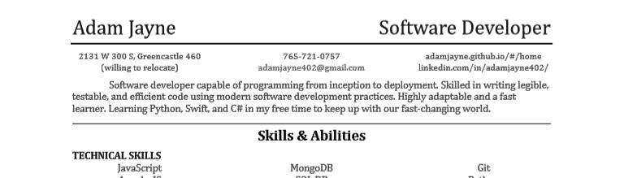

<div class="container" style="margin-top: 1%;">
	<div id="info col-xs-12 col-xs-offset-0 col-sm-10 col-sm-offset-1 col-md-8 col-md-offset-2 col-lg-6 col-lg-offset-3 col-xl-4 col-xs-offset-4">
		<button class="accordion">About</button>
		<div class="panel introInfo">
			
			<br>
			<p>My name is Adam Jayne. I currently reside in Greencastle, Indiana. I attended Eleven Fifty Academy for Web Design. I love programming, and this portfolio was developed and updated to give you an accurate account of who I am and what it is that I do. If you have any questions that are not answered by the portfolio, head over to the contact page and send me a message!</p>
			<p>My Resume Download Link</p>
			<a href="../files/adamResume.pdf" download >
				
			</a>
		</div>
		<button class="accordion">Experiences</button>
		<div class="panel">
			<strong><h3 style="text-align: center;">Professional:</h3></strong>
			<ul class="infoList">
				<li>Worked at a startup called Furtrieve, where I learned how to launch a website on a VPS, configure a SQL database, implement an API to interact with mobile devices, and develop and deploy an iOS app on the app store</li>
				<li>Attended Eleven Fifty Academy for a 12 week Javascript/Web Design intensive</li>
				<li>Experience in web development using HTML5, CSS3, and JavaScript</li>
				<li>Experinece with Express and Ajax for data manipulation</li>
				<li>Experienced in utilizing modern web development frameworks such as AngularJS, Angular 2/4, React, and Vue</li>
				<li>Photographed 2 Weddings</li>
				<li>Photographed an awards ceremony for the Indiana Angus Association</li>
				<li>10 years of 4-H</li>
				<li>3 years as a Junior Leader</li>
				<li>Unique abiliity for determining best fit genetics for Angus Cattle</li>
				<li>Traveled with and assisted an EIM contractor with auditing multiple farms</li>
			</ul>
			<strong><h3 style="text-align: center;">Personal:</h3></strong>
			<ul class="infoList">
				<li>Constructed a custom build pc out of modern parts for my grandfather as his home-station</li>
				<li>Constructed a custom build pc out of old parts, and successfully achieved a stable overclock on a cpu from 2009 for stable performance while playing modern AAA video game titles</li>
				<li>Traveled and assisted in construction of foundation and structure for a photovoltaic array</li>
				<li>Attended and participated in several National livestock shows</li>
			</ul>
		</div>
	</div>
</div>
